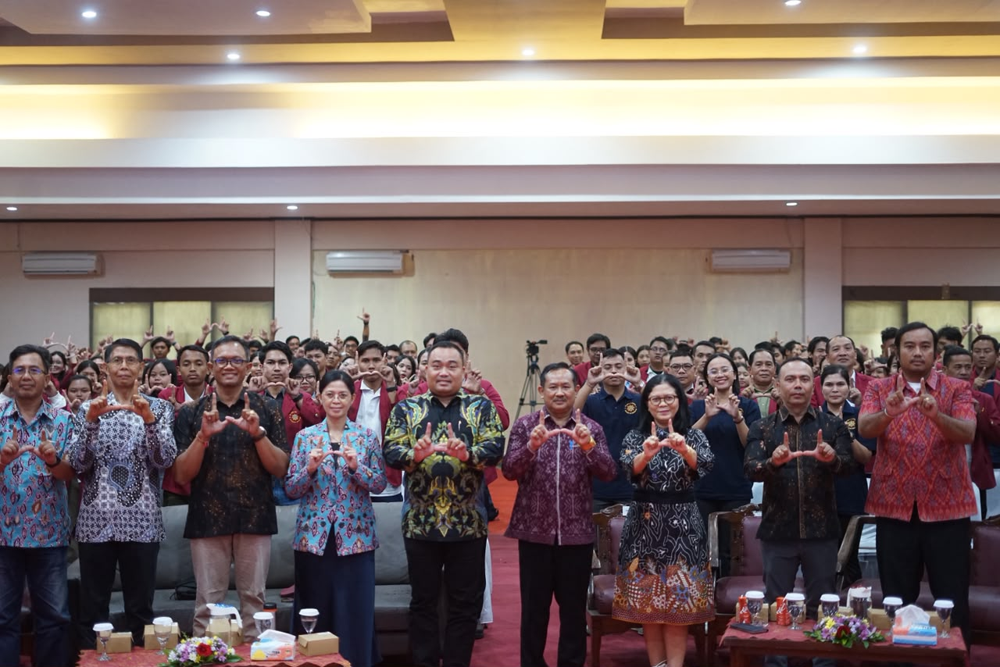

25 Juli 2026 · Pengabdian
Universitas Ngurah Rai resmi lepas mahasiswa KAT 2026/2027
Pelepasan Kuliah Aplikatif Terpadu mengusung tema transformasi desa berkelanjutan berbasis Tri Hita Karana melalui inovasi, kolaborasi, dan aksi nyata mahasiswa. Program ini menjadi bagian Tridharma, khususnya pengabdian kepada masyarakat.
Baca selengkapnya →